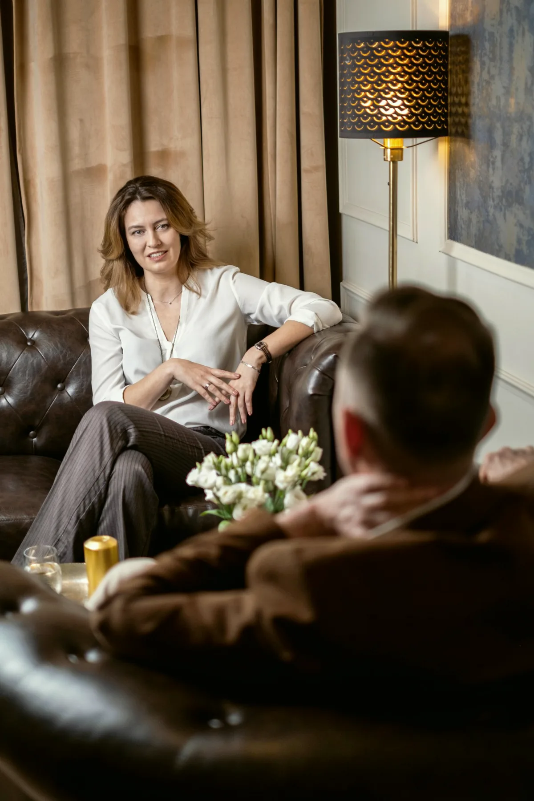

Coachaink között klinikai és tanácsadó szakpszichológusok is dolgoznak, egy szakmai vezetés alatt, ugyanabban a házban, ahol a terápiák folynak
Három irány
Ugyanaz a módszer: cél, keret, lépések. Más az élethelyzet. A szám azt mutatja, hány szakemberünk dolgozik az adott területen.
Életvezetési coaching
Pályaváltás, költözés, egy régóta halogatott döntés, életszakasz-váltás. Amikor nem baj van, hanem irány hiányzik.
27 szakember 02Üzleti és vezetői coaching
Új vezetői szerep, delegálás, konfliktus a csapatban, döntés egy cégről vagy egy karrierlépésről. Céges keretben is, erről a Cégeknek oldal szól.
18 szakember 03Párkapcsolati coaching
Két ember, egy közös kérdés: hogyan döntsünk, hogyan osszuk meg, hogyan beszéljünk úgy, hogy hallja a másik. Ha a kapcsolat krízisben van, a párterápia a jó út.
23 szakemberCoaching vagy terápia
Coaching, ha az élete működik, de van egy cél, amihez nem jut közelebb. A jövőről szól: mit, mikor, hogyan. Rövid, strukturált, feladatokkal két alkalom között.
Terápia, ha valami fáj, ismétlődik vagy nem múlik: szorongás, hangulat, régi minta. A múltat is nézi, és nem sietteti.
Ha nem tudja, melyik: az első beszélgetés ezt is eldönti. Ha terápia kell, házon belül van kihez továbbmenni, és nem kezdi elölről a történetét.
Felnőtt egyéni terápiaHogyan zajlik
Ötven perc, egy kérdéssel indul
Mit szeretne, hogy más legyen? Az első alkalom erről szól: a célt olyan pontosan fogalmazzuk meg, hogy később el lehessen dönteni, elértük-e.
Utána a coach kérdez, strukturál és visszajelez, Ön pedig két alkalom között kipróbál valamit. Az alkalmak számát az első beszélgetésen közösen becsüljük meg, és menet közben felülírjuk, ha kell.
A coaching nem helyettesíti a pszichoterápiát, és nem orvosi ellátás. Ha a beszélgetésben kiderül, hogy másra van szükség, ezt kimondjuk.
Hogyan kezdjük, lépésről lépésreAlkalmanként fizet, a coach díjsávja szerint.
Egészségpénztári elszámolásról az ügyfélszolgálat ad felvilágosítást. Ha most ez nem fér bele, megmondjuk, hol tud jó helyre kerülni olcsóbban.
Az ár, kimondva
15-18ezer forint egy 50 perces coaching alkalom
A coaching nem attól működik, hogy jól érzi magát az ülésen. Attól, hogy a következő héten mást csinál.